Speech Processing 101 baby
Lecture 1: Understanding Speech
Physical factors:
- vocal cord size
- length of vocal tract
- nasal voice (lack of airflow)
- tongue thickness, palatal lisp (/th/)
Consonants — place of articulation where airflow is most constricted
- Labial (lips) — /b/, /m/
- Coronal (tip of tongue) — /s/, /z/, /t/
- Dorsal (back of tongue) — /k/, /g/, /n/
Fricatives = hissing sound /f/, /v/, /s/, /z/
Affricative = stop immediately followed by a fricative /ch/
Stop = first - close, then explode /b/, /m/
Vowel depend on
- height
- backness
- rounded lips /uw/, /ao/, /ow/
Consonants are defined in terms of their place and manner of articulation and voicing; vowels by their height, backness, and roundness.
IPA = universal system using unique symbols to represent sounds from every human language
ARPAbet = American English with keyboard letters
Sources for variation:
- within speakers: ambient conditions, health, state of mind, speech style
- among speakers: physical condition, accent
Co-articulation = The movement of articulators to anticipate the next sounds, or fixate on movement from the last sound
Reduction = Sounds are shortened, reduced and generally run together
- She is she’s
- Want to / going to wanna, gonna
Assimilation & Deletion = Sounds are deleted due to context
- must be (‘t’ deletion)
- Sounds adapt to its neighbor
- Green boat ‘n’ becomes ‘m’
- Don’t you ‘y’ becomes ‘zh’
Levels of Abstraction:
Phonetic = aspect of pronunciation including variability due to context
Phonemic = context effects are factored out
Phonological = general representation
Phonology = Linguistic subsystem that transforms a phonemic sequence according to rules and produces the phonetic form that is uttered by the user.
Rule-based:
Minimal Pairs = words that differ in only one phonological feature.
- cat - bat
- maid [m e i d] - made [m e i d] are not minimal!
Phones = speech sounds adopted from Roman alphabet to represent the pronunciation of words: SPEECH S P YI CH
Phonemes = smallest unit of sound: cat /k/ /a/ /t/
A distinctive feature creates minimal pairs when changed.
Place of Articulation (where the air is blocked)
| Term | Meaning | Examples |
|---|---|---|
| Bilabial | Both lips touch. | /p/, /b/, /m/, /w/ |
| Labiodental | Top teeth on bottom lip. | /f/, /v/ |
| Dental | Tongue tip against teeth. | /θ/ (th in thin), /ð/ (th in this) |
| Alveolar | Tongue tip touches the ridge behind teeth. | /t/, /d/, /s/, /z/, /n/, /l/ |
| Palatal | Tongue body touches the hard roof (middle). | /j/ (y in yes), /ʃ/ (sh) |
| Velar | Back of tongue touches the soft palate (back). | /k/, /g/, /ŋ/ (ng in sing) |
| Glottal | In the throat (vocal cords). | /h/ |
| Coronal | Any sound using the tongue tip/blade (covers Dental & Alveolar). | /t/, /d/, /n/, /s/ |
Manner of Articulation (How the air is blocked)
| Term | Meaning | Examples |
|---|---|---|
| Stop | Air is stopped completely, then bursts out. | /p/, /b/, /t/, /d/, /k/, /g/ |
| Fricative | Air is squeezed through a small gap (hissing noise). | /f/, /v/, /s/, /z/, /h/ |
| Nasal | Air flows through the nose (mouth is blocked). | /m/, /n/, /ŋ/ (ng) |
| Approximant | Air flows smoothly (like a vowel, no hiss). | /w/, /r/, /j/ (y) |
| Lateral | Air flows around the sides of the tongue. | /l/ |
Lecture 2: Speech in Digital Realm
Vocal folds vibrate at multiple different frequencies. The Fundamental Frequency F0 is the strongest and slowest vibration. The fundamental frequency is often called pitch. The frequency of the vocal fold vibration, or the frequency of the complex wave, is called the fundamental frequency of the wave-form, often abbreviated F0.
Harmonics make a sound richer and are referred to as ”overtones”.
Harmonics are repetitions of the ’base’ in a pattern
- 2nd harmonic: twice as fast as F0
- 3rd harmonic: three times as fast as F0
- etc
The higher the harmonic the softer the vibration/volume. With only the vocal folds, higher harmonics would barely be heard. We have a resonator to boost harmonics: the vocal tract.
The vocal tract can be interpreted as tubes of air. Sound waves vibrate in these tubes and, depending on the shape of the tubes, some harmonics get boosted, they resonate.
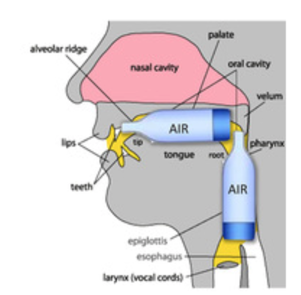
Variables that influence the vibrations (pitch):
- size
- shape
- density of the walls
- size of opening
The harmonics that are boosted are called formants.
- F1: vibrations in the tube behind the tongue
- F2: vibrations in the tube above and in front of the tongue
As a rule of thumb, the higher the harmonic, the higher the frequency
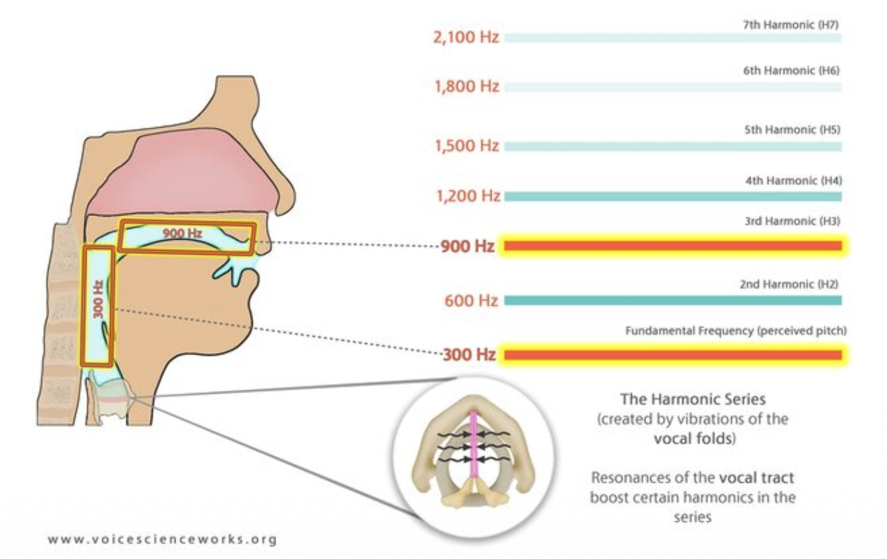
Analogue to digital: through sampling.
This analog-to-digital conversion has two steps: sampling and quantization. To sample a signal, we measure its amplitude at a particular time; the sampling rate is the number of samples taken per second. To accurately measure a wave, we must have at least two samples in each cycle: one measuring the positive part of the wave and one measuring the negative part.
Thus, the maximum frequency wave that can be measured is one whose frequency is half the sample rate (since every cycle needs two samples). This maximum frequency for a given sampling rate is called the Nyquist frequency.
Most information in human speech is in frequencies below 10kHz; thus, a 20kHz sampling rate would be necessary for complete accuracy. Typically, 16kHz is used.
Human hearing is most sensitive up to 20kHz: CD quality sample frequency (44.1kHz) is sufficient, going higher doesn’t add much for humans.
Why is interpreting phones from a waveform problematic?
Because we can express the same thing in different ways (shouting, calmly, etc.)
Spectrum (plural: spectra) = time-domain to frequency domain. The spectrum of a signal is a representation of each of its frequency components and their amplitudes. The X-Axis is frequency, and Y-axis is amplitude (dB/volume).
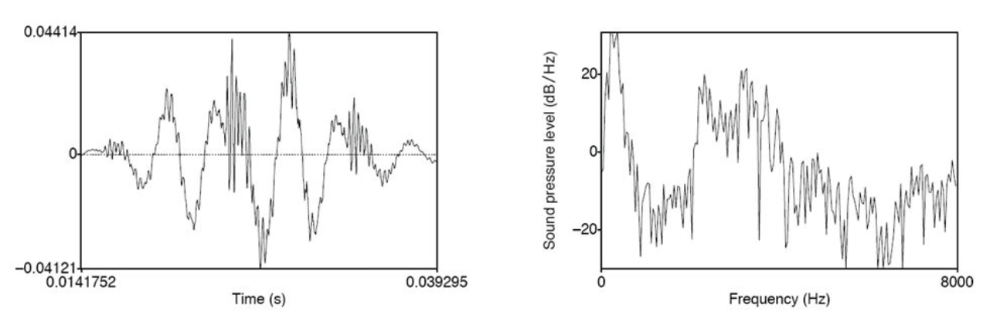
- the one on the left is a waveform: represents sound in time domain
- the one on the right is a spectrum: the sound in the frequency domain at a single point in time
Spectogram = plotting the frequency domain in the time-domain. While a spectrum shows the frequency components of a wave at one point in time, a spectrogram is a way of envisioning how the different frequencies that make up a waveform change over time.
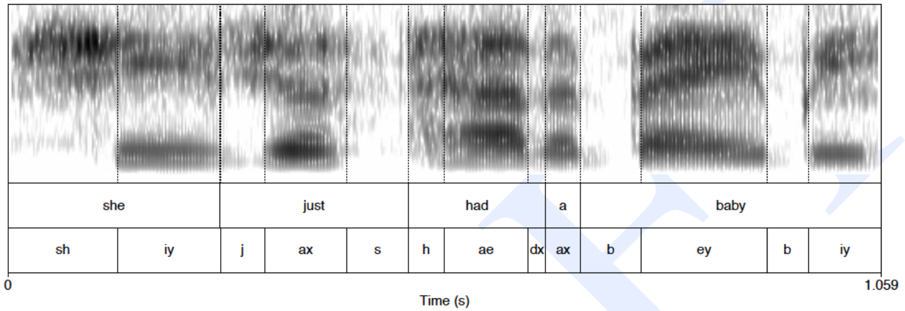
The dark bands represent the formants. The lowest one is F0.
Mel Frequency Spectrum (MFC)
Human hearing is not equally sensitive at all frequency bands; it is less sensitive at higher frequencies. This bias toward low frequencies helps human recognition, since information in low frequencies (like formants) is crucial for distinguishing vowels or nasals, while information in high frequencies (like stop bursts or fricative noise) is less crucial for successful recognition.
A mel is a unit of pitch. Pairs of sounds that are perceptually equidistant in pitch are separated by an equal number of mels. Uniformly before 1kHz, logarithmic after 1 kHz.
Mel scale is about sensitivity on frequency level. Loudness (dB) is perceptual correlate of power (intensity). It’s not linear, though. Humans have greater resolution in the low-power.
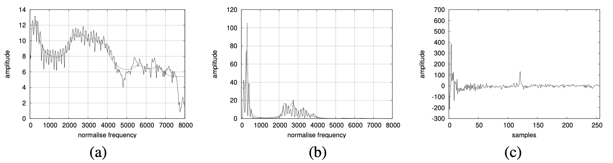
The magnitude spectrum (a), log magnitude spectrum (b), and cepstrum (c).
One way to think about the cepstrum is as a useful way of separating the source and filter. The most useful information for phone detection is the filter, that is, the exact position of the vocal tract. If we knew the shape of the vocal tract, we would know which phone was being produced.
The cepstrum can be thought of as the spectrum of the log of the spectrum. Or as the Inverse Fourier Transform (IFT) of the Log Spectrum.
The speech waveform is created when a glottal source waveform of a particular fundamental frequency is passed through the vocal tract, which because of its shape has a particular filtering characteristic. But many characteristics of the glottal source (its fundamental frequency, the details of the glottal pulse, etc.) are not important for distinguishing different phones. Instead, the most useful information for phone detection is the filter, that is, the exact position of the vocal tract. If we knew the shape of the vocal tract, we would know which phone was being produced.
Low dimensional region (in cepstrum) correspond to the vocal tract features
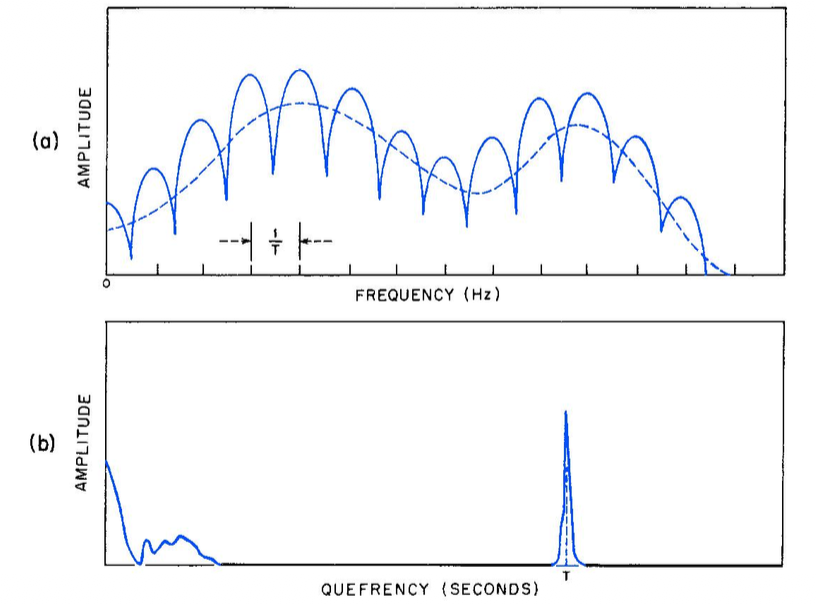
In Graph (a), the source is represented by the jagged vertical lines (harmonics) which are caused by vocal fold vibration. The filter is the smooth dashed line (spectral envelope) that shows how your mouth and throat shape the sound.
In Graph (b), the source is that single sharp peak on the right side of the graph. The filter is the cluster of activity on the far left.
From Waveform to MFCC
- Raw signal Power Spectrum Log Power Spectrum Cepstrum
MFCCs are the standard “features” used in voice recognition. You start with a Power Spectrum. You then apply a log operation to it. This is done because human hearing is logarithmic—we are much more sensitive to changes in lower volumes and frequencies than higher ones.
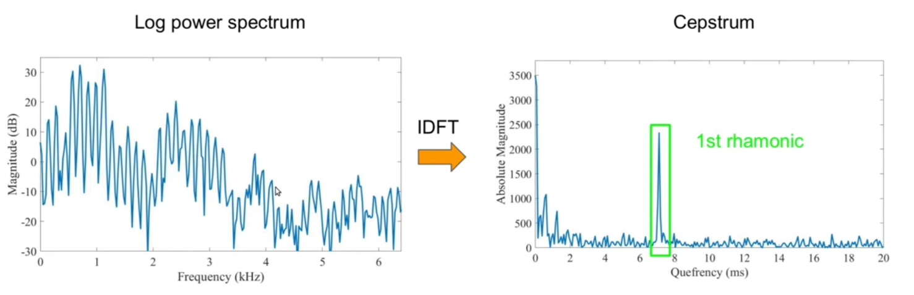
From Gemini:
- The Filter: The broad, “slow” moving shape of the spectrum (the vocal tract info) gets pushed to the far left of the Cepstrum.
- The Source: The fast, periodic ripples (the harmonics from your vocal folds) get condensed into that single sharp peak on the right, labeled as the 1st rhamonic (or pitch peak).
Another way to get information about voice quality: Inverse-filtering
Lecture 3: Paralinguistics
paralinguistic functions: conveying affective meanings like happiness, surprise, or anger.
recent challenges: emotion share & requests
The relationship between vocal variables and their marking functions.
Physical markers are permanent:
- Age, sex, physique, state of health
Sociological markers vary:
- Personality, affective state, social status, social role, educational status
Extralinguistics — informative rather than communicative (informative)
Pragmatics: Sarcasm
Prosody is an umbrella term for:
- F0 (fundamental frequency, pitch) - related information
- Intensity (loudness) - related information
- Rhythm / durational - related information (e.g. speaking rate)
- Voice quality
F0
High pitch(F0) denotes small meanings such as submissive, friendly, uncertain, vulnerable.
Low pitch (F0) denotes big meanings such as dominant, aggressive, certain, protective.
Subglottal air pressure will be higher at the beginning of the phrase than towards the end (this is how speaking and the respiratory system works).
In utterance beginnings:
- high pitch signals new topic, low pitch continuation of topic
In utterance ending:
- high pitch signals continuation, low pitch signals finality.
Prominence: Stands out. Signals new information. We represent prominence via a linguistic marker called pitch accent. Words or syllables that are prominent are said to bear (be associated with) a pitch accent.
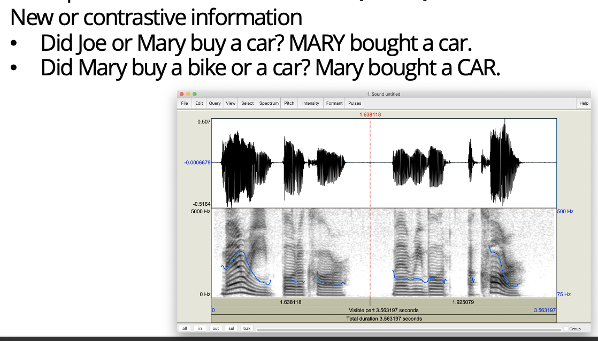
F0 can also signal end of phrasing (F0 declination). It can also signal a question.
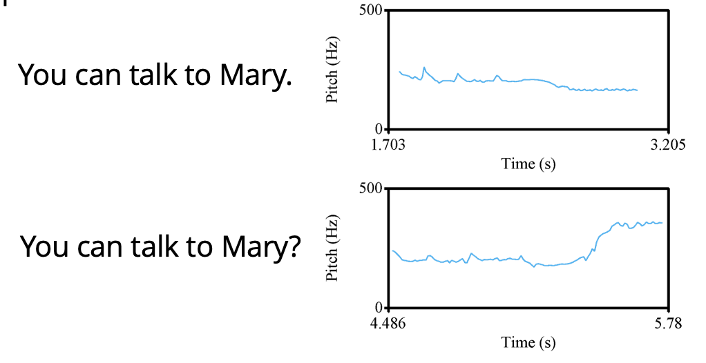
Intensity/Loudness
Intensity is measured on a logarithmic scale normalized to human auditory threshold, expressed in dB. Intensity is bit of a complicated measure to interpret as it partly depends on the distance between source (mouth) and microphone.
Articulation Rate / Speaking Rate: usually measured as number of syllables per second.
Spectral-Related
Formants MFCC work well for paralinguistics tasks such as emotion recognition. F1 and F2 differ between emotions.
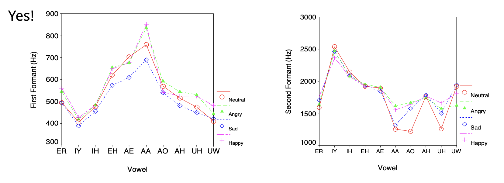
Long-term averaged spectra (LTAS) contain information related to voice quality.
Jitter and Shimmer: variations in signal frequency and amplitude respectively, caused by irregular vocal fold vibration. Perceived as roughness, breathiness, hoarsness. Best measured in sustained vowels
Jitter: frequency variation from cycle to cycle, indicates lack of control of vibration of the cords.
Shimmer: amplitude variation of the sound wave, usually indicates breathiness.
Low-level descriptors such as F0, intensity, MFCCs can be derived by applying speaker normalization (Z-scores).
Typical Pipeline
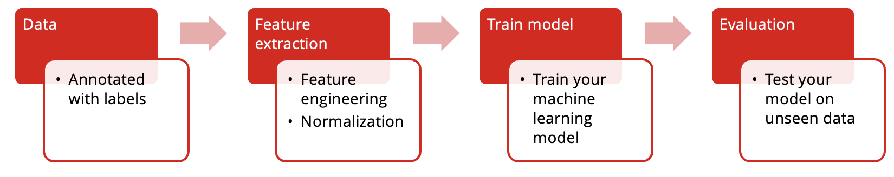
Lecture 4: Automatic Speech Processing
The Noisy Channel Model
- What is the most likely sentence out of all sentences in the language L given some acoustic input O?
- Treat acoustic input O (features) as sequence of individual observations
- Define a sentence as a sequence of words
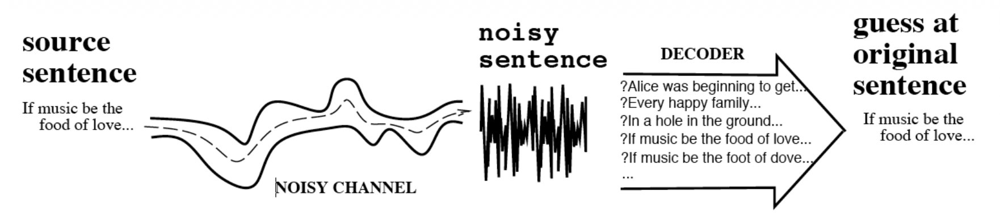
Since the observation is fixed (it’s what the computer just heard), P(O) stays the same no matter which word W you test against it.
Speech Recognition Architecture
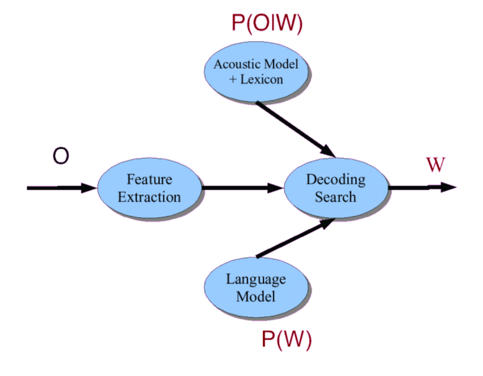
Feature Extraction Techniques
Linear Predictive Coding (LPC)
Formant estimation, static. Disadvantage: Assumption that signals are stationary
Perceptual Linear Prediction (PLP)
Describes the psychophysics of human hearing more accurately (bark-spaced filter bank)
Mel Frequency Cepstrum (MFCC)
Mimics human auditory system. Disadvantage: background noise
Relative Spectral (RASTA) filtering
Relative Spectral (RASTA) filtering
As mentioned earlier, MFCC is the most widely used.
Acoustic Modeling
Paradigm
- Choose a model type
- Train with example data
- Use model to compute probabilities
Acoustic model defines the probability distributions: the likelihood that a given value falls within the region that identifies a particular phone. Each phone is modeled using a Probability Density Function (PDF).
Vocabulary and Lexicon
- Vocabulary: all unigrams in the language model
- Lexicon connects the LM with AM.
- Include pronunciation variation: include multiple pronunciations, optionally with probs (based on training data)
WER is used to evaluate ASR. I covered ASR in What automatic speech recognition can and cannot do for conversational speech transcription.
Spoken Document Retrieval
Using automatic speech recognition to convert speech in audio and video to time-coded transcripts that can be used for searching in the audiovisual data.
aka speach retrieval, voice search
To perform SDR, we require
- large vocabulary, speaker independent
- handling of Out of Vocabulary (OOV) by
miss- consider that it can not be found, orfalse positive- an OOV word is replaced by another word that “accidentally” matches a query.
Alignment
Alignment in the context of speech recognition is a technique to add time-codes to an verbatim transcript that has already been generated maunally, using the acoustic models from a speech recognition system (’informed speech recognition’).
- Typically used for training acoustic models: which parts of the audio belong to a word or even a phone
Requirements for ASR evaluation
A requirement for ASR evaluation is the reference: verbatim account of what was said.
- typically no punctuation, but correct spelling!
- typically manually generated
- Segment Time Marked (STM): short phrases.
Another requirements is The Hypothesis: what the speech recognition produces, typically including time-codes for each word.
- Conversation Time Marked (CTM): word based
Normalization: make sure that both hyp and ref follow the same principles:
- Spelling
- numbers2text
- Global Mapping: doesn’t does not, A. A
Lecture 5: Deep Learning in ASR
Asta e roman de-a nostruuuu, Dragoș Bǎlan
Hybrid vs End to End (E2E)
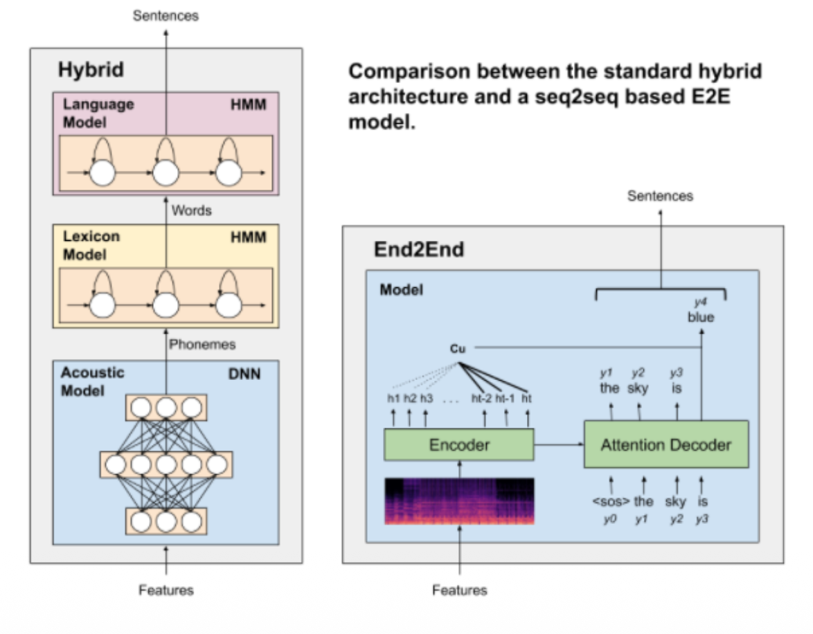
- Hybrid models offer modularity when training (can train the 3 components separately with different techniques)
- E2E models simplify the training pipeline (only some pre-/post-processing required)
- Less types of data required for E2E
- Most E2E models outperform the state-of-the-art in hybrid models
Explicit alignment: Connectionist Temporal Classification (CTC)
- It maps an input sequence of frames to an output sequence of tokens/characters.
- Achieved by defining a vocabulary of characters + a special “blank” token used for decoding.
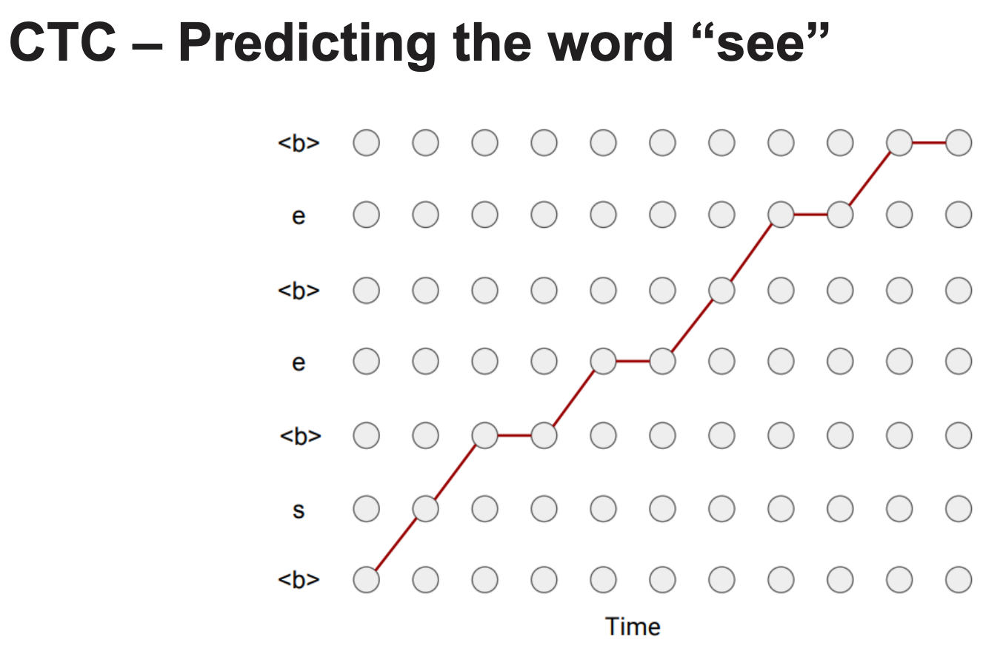
After generating the sequence of tokens, a sequence of identical non-blank tokens separated by blank tokens () will be merged into one non-blank token .
All blank tokens are removed to obtain the final character sequence (from to → “see”)
CTC Versus Attention
Advantage of explicit alignment: can be used in streaming ASR models (real-time). However, explicit alignment methods make predictions using only the current frame and previous outputs.
Implicit alignment instead takes entire input sequence into account and assigns weights/scores to all elements of the input sequence, for each output element.
Implicit alignment: Attention-based Encoder-Decoder (AED)
Attention however is not easily streamable. It’s mainly used for offline ASR. Also, the performance degrades if the text is too long and large amounts of data are required for training them.
Additional Modules
- Voice Activity Detection (VAD) – Filters out non-speech segments
- Speaker Diarization(SD) – Labels “who spoke when” in multi-speaker audio
- Speech Enhancement – Removes noise/reverberation, improves clarity
- (L)LM Rescoring – Re-ranks hypothesized words using a (Large) Language Model
Majority of languages are considered low-resource.
Most of the pretraining data comes from adults that speak the language at a native level. Data from children/people with pathological speech is sensitive (difficult to gather).
challenge: noisy environments - ASRs cannot focus on one speech source like humans can.
Lecture 6: Speech Synthesis
They introduce a new element of speech besides pitch and loudness, and that is timber.
The timber varies depending on the shape of the tube, even if the vibration is the same.
F1-F2 chart has good correlation with vowel chart.
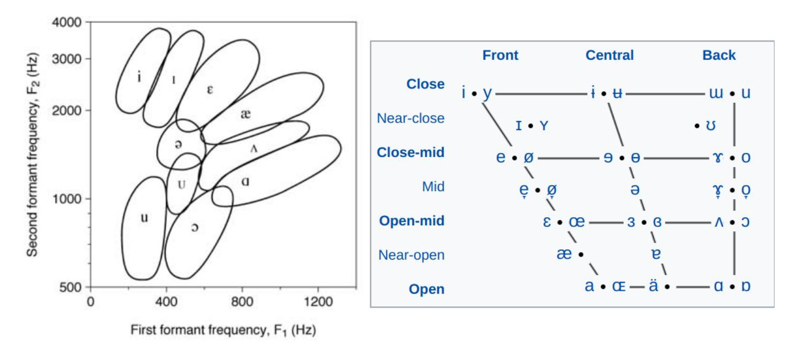
Doing speech synthesis via F1-F2 correlation with the vowel chart sounds robotic. It’s also difficult to synthesize consonants.
Unit Selection Synthesis (USS)
Concept: Concatenate pre-recorded small speech units
Goal: to convert text into tokens that computer can process, analyze syntax and extract contextual information. Methods include:
- Text normalization,
- Text tokenization,
- Syntax analysis,
- Linguistic analysis.
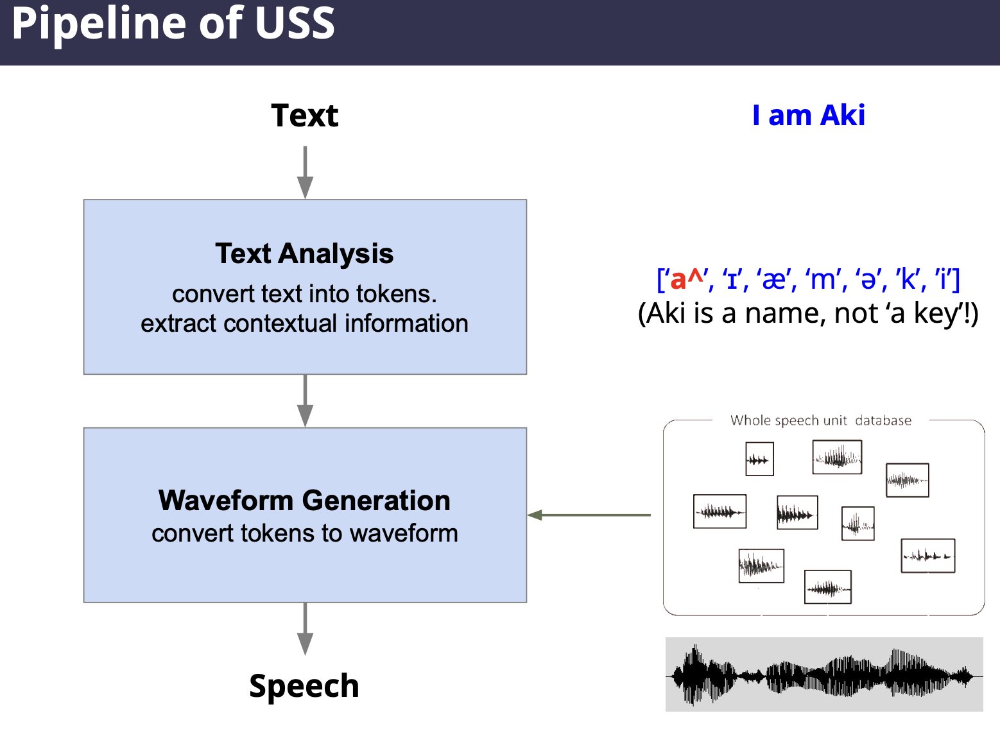
USS needs a large database and therefore can present memory constraints.
Statistical Parametric Speech Synthesis (SPSS)
Goal: Create the sound that the most likely to the text
Pipeline looks like this:
- Extract Features Analysis Estimation Synthesis
General Flow of Statistical Parametric Speech Synthesis
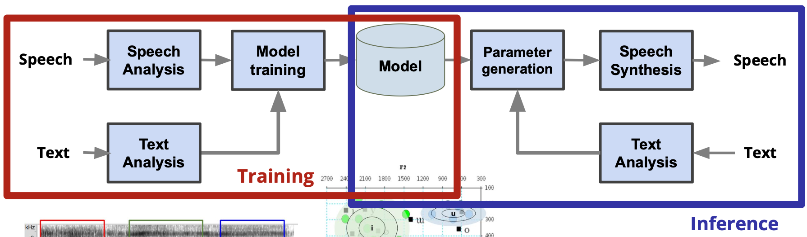
We have 3 steps in these models:
- Extract relevant features from speech and text.
- Paralinguistic features e.g. pause, speech rate, emotion
- Nonlinguistic features e.g. speaker information
- try raw waveform or formants
- Describe the feature distribution as precise as possible.
- Synthesize speech from the feature sequence.
Vocoder
Goal: Estimate waveform from the predicted features.
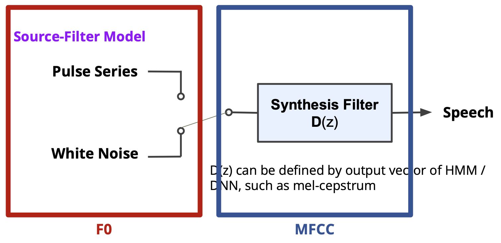
Types of Vocoders:
- Wavenet (autoregressive) = predict a next sample based on previous samples in a long-range window.
- GAN-based vocoders.
The vocoder holds the key to sound quality. It can handle text that hasn’t been recorded and add various changes to the voice (even emotions!).
E2E SPSS: Large system which estimate sound signal directly from the input text
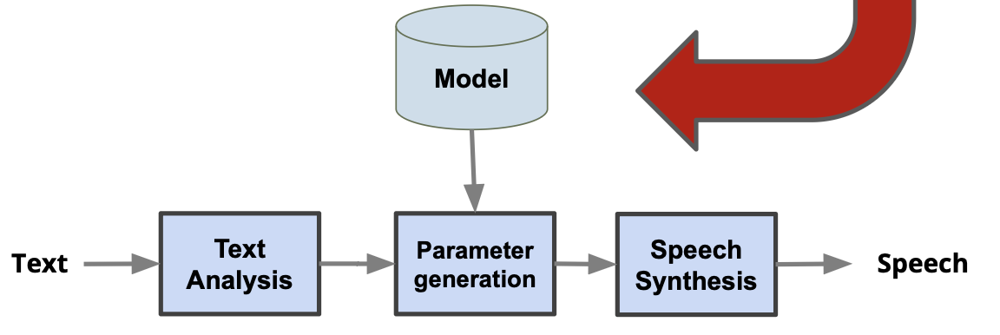
This is still too difficult. Text is too lossy compression of speech, not much information!
You can couple it with the vocoder. They can also be trained independently. The E2E SPSS gives the (mel) spectrum and vocoder takes it as input to calculate the waveform.
So in total there are 5 ways to read text aloud:
- mimic human organs (very early history)
- formant speech synthesis (robot-like performance)
- USS (the one with the database?)
- SPSS(probabilistic approach)
- E2E (mix between SPSS and Vocoder)
Information that one’s voice contains
- pitch, rythm, intonation, emotion,
- age, gender, body shape(???), regional accent, social status.
What is voice conversion?
- Extract contents of speech (words)
- Deduce Paralinguistic Elements (pitch, speed, emotion)
- Derive Nonlinguistic information: elements beyond language, which the speaker cannot control e.g. age, accent, personality.
You want to change the voice, but not the contents. Sounds like Sebastian Dobrincu and his startup ideas.
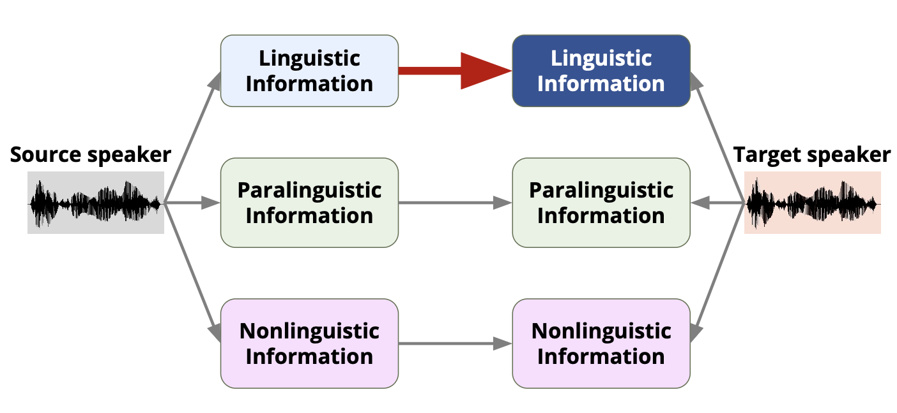
Voice Conversion that requires only one sentence or really small amount of sentence is called “one/zero shot voice conversion”.
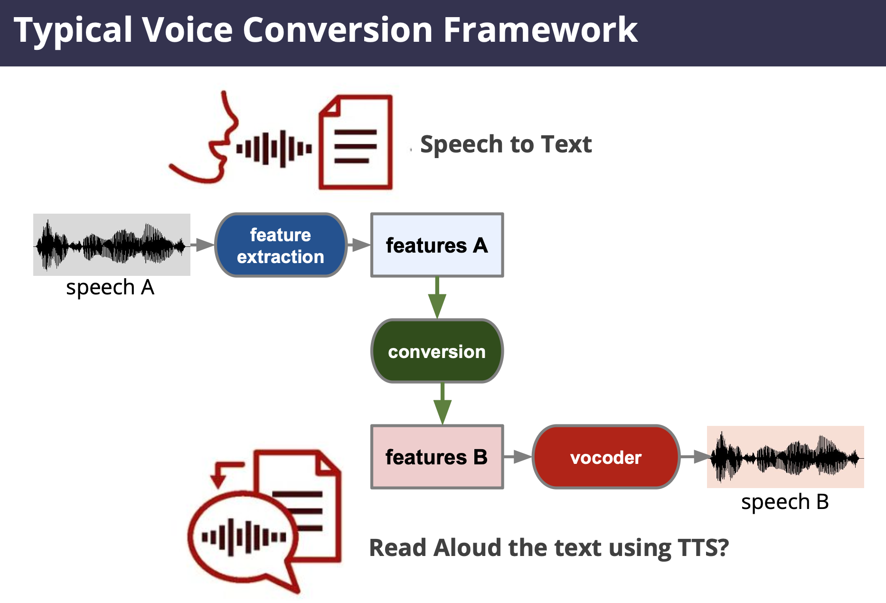
Near-End Listening Enhancement: Technology that converts speech into easily intelligible audio even in noisy or reverberant environments (it’s not noise cancelling!).
There are 2 ways to convert your voice: GMM / GAN.